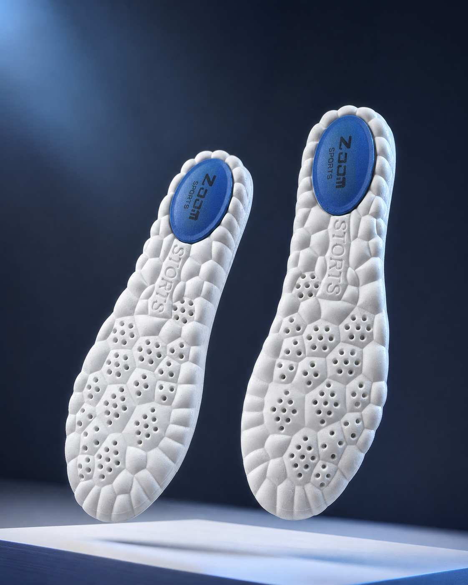
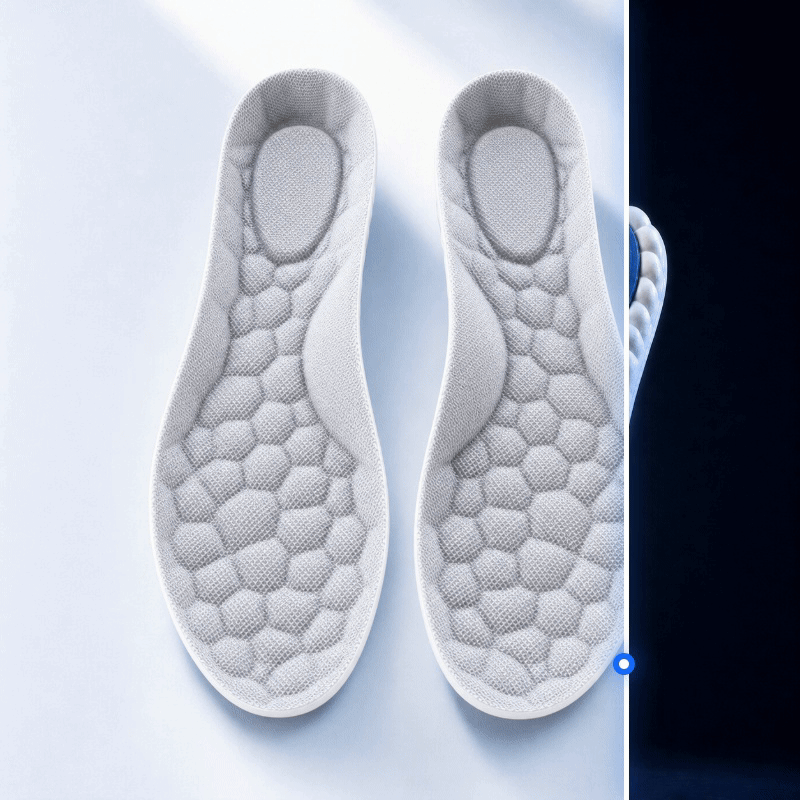
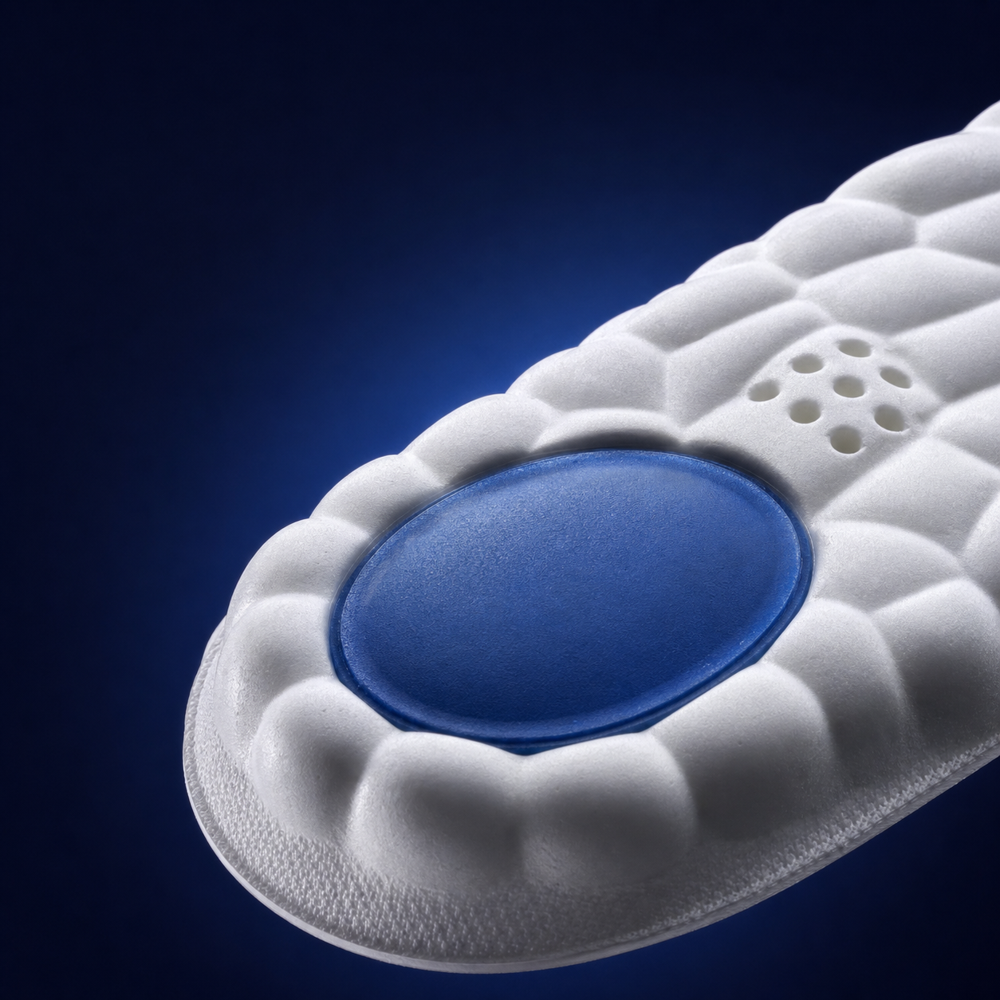
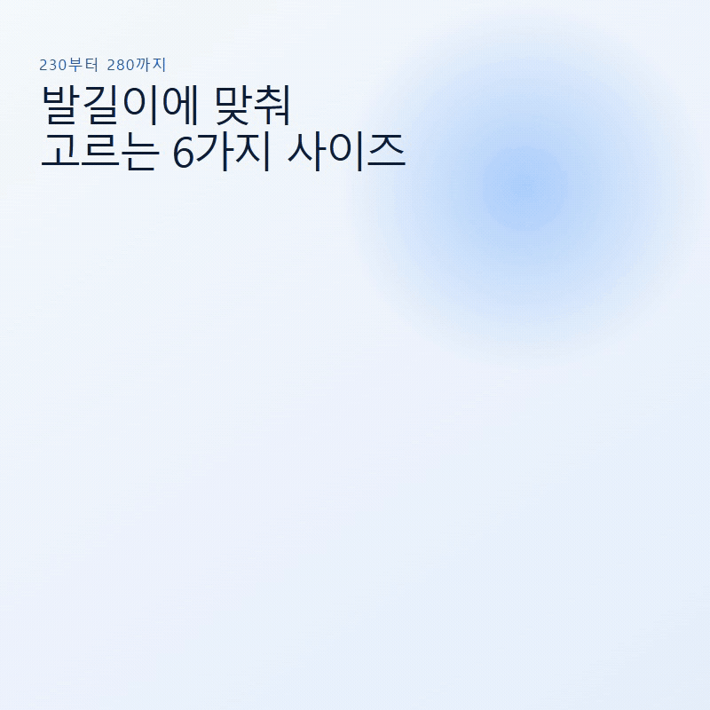
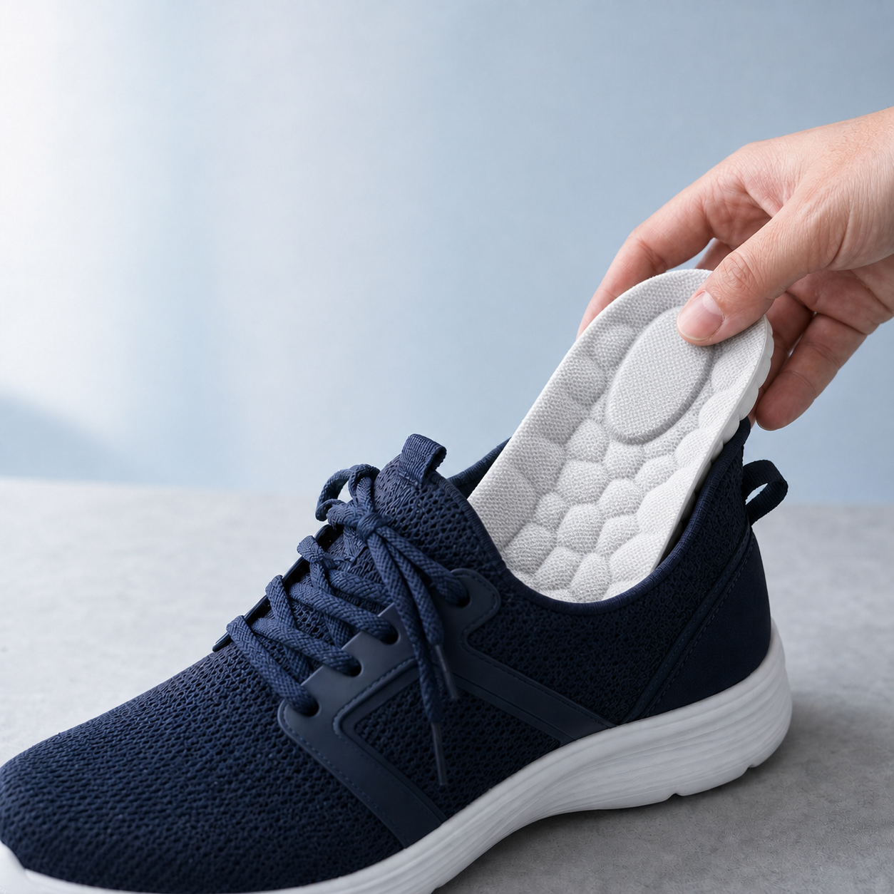
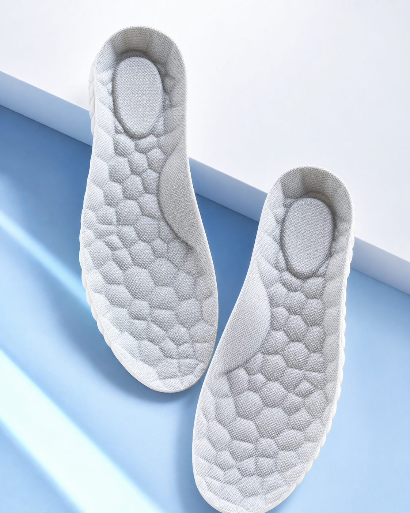

오래 신으면
발바닥이 쉽게 피곤하지 않을까?

NOVAFACE · 노바페이스
하루 종일 신는 신발, 바닥부터 가볍게
발편한
기능성깔창
포근하게 받쳐주는 입체 에어셀과
신발 속 공기 흐름을 고려한 통풍 설계
고탄성 PU
에어메시
230–280
발은 더 편안하게
신발 속은 덜 답답하게
깔창 하나를 고를 때도
궁금한 건 많으니까.
매일 신을수록 먼저 떠오르는 질문부터 살폈습니다.
신발 속이
답답하고 습해지지 않을까?
내 발길이에는
어떤 사이즈가 맞을까?
노바페이스가 답합니다
푹신함은 에어셀로,
답답함은 에어홀로.

두 가지 소재, 한 장에
발이 닿는 면은 부드럽게,
바닥은 탄탄하게.

에어메시 상면
발이 닿는 면을 부드럽고 산뜻하게
고탄성 PU 하면
신발 바닥에 닿는 면을 유연하고 탄탄하게

02
AIR FLOW
앞꿈치부터 중간까지,
촘촘하게 이어진 에어홀.
에어메시와 다수의 에어홀로
신발 속 공기 흐름을 고려했습니다.
03
AIR CELL CUSHION
디딜 때마다
포근하게 받쳐주는
입체 에어셀.
발바닥 전체에 이어진 둥근 셀이 충격을 부드럽게 분산하도록 설계했습니다.

04
HEEL CUSHION
뒤꿈치 중심에
더한 블루쿠션.
하중이 모이는 뒤꿈치에 쿠션 포인트를 한 겹 더했습니다.
BLUE CUSHION


05
FLEXIBLE PU
움직임을 따라
유연하게.
부드럽게 휘어지는 PU 구조가 발의 움직임을 자연스럽게 따라갑니다.
발길이에 맞춰 고르는
230부터 280까지,
6가지 사이즈.
5mm 단위 발길이라면 한 단계 위 사이즈를 선택해 주세요.
- 230
- 240
- 250
- 260
- 270
- 280
발길이 255mm
260 선택

이런 날 더 필요합니다
오래 서고, 오래 걷고,
매일 같은 신발을 신는 날.
군화
단단한 바닥이 부담스러운 날
작업화
오래 서 있는 하루를 보낼 때
운동화
걷고 움직이는 시간이 길 때
일상화
얇은 기본 깔창이 아쉬울 때

사용은 간단하게
기존 깔창을 빼고,
뒤꿈치부터 쏙.
- 1
신발 안쪽 공간을 확인해 주세요.
- 2
기존 깔창을 먼저 빼 주세요.
- 3
뒤꿈치부터 밀착해 넣어 주세요.
군화 · 작업화 · 운동화
뒤꿈치부터
차근차근.

사용 장면으로 보는 선택 이유
매일 신는 신발에,
원하던 세 가지.
오래 서 있는 날에도
발바닥을 포근하게 받쳐줘요.
에어홀로 신발 속
답답함을 덜어줘요.
발길이에 맞춰 고르니
사이즈 선택이 쉬워요.
좌우 한 세트
노바페이스
발편한 기능성깔창.
한 켤레로 시작하는 발 아래의 작은 변화

PRODUCT INFORMATION
구매 전 한 번 더 확인하세요.
- 제품명
- 노바페이스 발편한 기능성깔창
- 재질
- 고탄성 PU, 에어메시천
- 사이즈
- 230 / 240 / 250 / 260 / 270 / 280mm
- 구성
- 좌우 한 켤레
- 제조국
- 중국 OEM
FAQ
자주 묻는 질문.
255mm는 어떤 사이즈를 고르면 되나요?
5mm 단위 발길이는 한 단계 위인 260mm를 선택해 주세요.
신발에 바로 넣어도 되나요?
신발 안쪽 공간을 확인한 뒤 기존 깔창을 빼고 넣어 주세요.
어떤 신발에 사용할 수 있나요?
군화, 작업화, 운동화 등 깔창을 교체할 수 있는 신발에 사용할 수 있습니다.
에어홀은 어디에 있나요?
앞꿈치부터 중간 부위까지 다수의 원형 에어홀이 이어져 있습니다.

NOVAFACE
발 아래 한 장으로,
하루를 더 편안하게.
노바페이스 발편한 기능성깔창
230–280mm · 좌우 한 세트